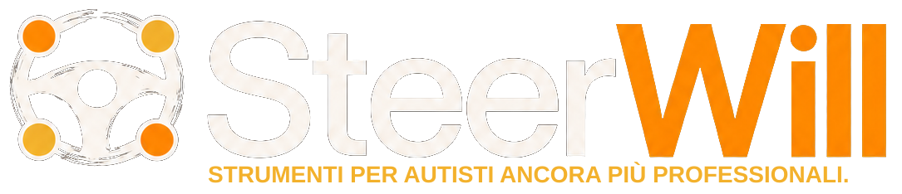

TURNI · SIMULAZIONEDisponibilità e turni
Disponibilità, bozze e pubblicazione di prova sono salvate sul server e condivise fra i tuoi dispositivi. Il cambio autista è riservato all’ufficio; i turni simulati restano separati dai turni operativi.
Calendario mezzi
Sinistra: disponibile per entrambe le fasce (default). Centro: AM / PM impone l’uso nella fascia selezionata; entrambe le spunte impongono l’uso per la giornata. Destra: stato a rotazione — spunta verde: marciante (default); chiave inglese: guasto; calendario con chiave inglese: manutenzione programmata. Ogni clic passa allo stato successivo; guasto e manutenzione tolgono il mezzo dalla capacità. La priorità 1–5 resta indipendente: 5 è l’ultima scelta.
Copertura e mezzi disponibili
Capacità ricavata automaticamente dal calendario dei mezzi marcianti. Lunga conta in entrambe le fasce; notte esclusa. Gli obblighi AM/PM non riducono il numero dei mezzi disponibili.
| Giorno | Mezzi mattina | Autisti disponibili AM | Assegnati M | Mezzi pomeriggio | Autisti disponibili PM | Assegnati P | Obblighi da coprire AM / PM |
|---|
Assegna un turno
Seleziona una cella della griglia oppure compila qui. Le modifiche restano in bozza fino alla pubblicazione.
Griglia settimanale
Anagrafica server · 7 giorni. Tocca una cella per assegnare; il nome per simulare l’autista.
L · Lunga M · Mattina P · Pomeriggio N · Notte R · Riposo ND · Non disponibile — · Non compilata